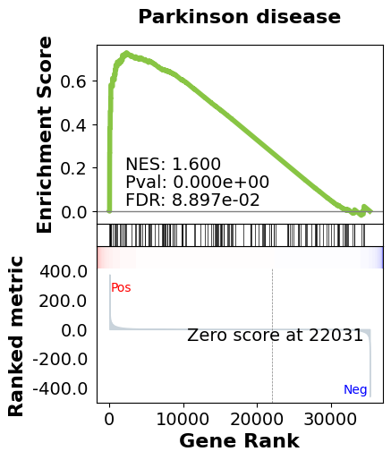

First, we set up our working environment and import the necessary libraries:
import pandas as pd
from importlib import reload
import src.Engines.analysis_engine as analysis_engine
import src.Connectors.gcp_bigquery_utils as gcp_bigquery_utils
reload(analysis_engine)
reload(gcp_bigquery_utils)
We download the dataset for a specific primary diagnosis and primary site:
project_id = 'rnaseqml'
dataset_id = 'rnaseqexpression'
table_id = 'expr_clustered_08082024'
bq_queries = gcp_bigquery_utils.BigQueryQueries(project_id=project_id,
dataset_id=dataset_id,
table_id=table_id)
pr_site = 'Head and Neck'
pr_diag = 'Squamous cell carcinoma, NOS'
data_from_bq = bq_queries.get_df_for_pydeseq(primary_site=pr_site, primary_diagnosis=pr_diag)
Note: The dataset contains 407 rows and 7 columns, including case IDs, primary site, sample type, and gene expression data.
We preprocess the data for differential expression analysis:
analysis_eng = analysis_engine.AnalysisEngine(data_from_bq, analysis_type='DE')
if not analysis_eng.check_tumor_normal_counts():
raise ValueError("Tumor and Normal counts should be at least 10 each")
gene_ids_or_gene_cols_df = pd.read_csv('/Users/abhilashdhal/Projects/personal_docs/data/Transcriptomics/data/gene_annotation/gene_id_to_gene_name_mapping.csv')
gene_ids_or_gene_cols = list(gene_ids_or_gene_cols_df['gene_id'].to_numpy())
exp_df = analysis_eng.expand_data_from_bq(data_from_bq, gene_ids_or_gene_cols=gene_ids_or_gene_cols, analysis_type='DE')
metadata = analysis_eng.metadata_for_pydeseq(exp_df=exp_df)
counts_for_de = analysis_eng.counts_from_bq_df(exp_df, gene_ids_or_gene_cols)
We perform differential expression analysis using DESeq2:
res_pydeseq = analysis_eng.run_pydeseq(metadata=metadata, counts=counts_for_de)
Note: The DESeq2 analysis compares tumor samples against normal samples, providing log2 fold changes and adjusted p-values for each gene.
We merge the DESeq2 results with gene names for GSEA:
res_pydeseq_with_gene_names = pd.merge(res_pydeseq, gene_ids_or_gene_cols_df, left_on='index', right_on='gene_id')
Finally, we perform Gene Set Enrichment Analysis using the KEGG pathway database:
from gseapy.plot import gseaplot
import gseapy as gp
from gseapy import dotplot
gene_set = 'KEGG_2021_Human'
result, plot, pre_res = analysis_eng.run_gsea(res_pydeseq_with_gene_names, gene_set)

In this analysis, we've performed a comprehensive gene expression analysis of Head and Neck Squamous Cell Carcinoma. We started by retrieving data from BigQuery, preprocessed it for differential expression analysis, ran DESeq2 to identify differentially expressed genes, and finally performed GSEA to identify enriched pathways in our dataset. The GSEA results provide insights into the biological processes that may be altered in this cancer type, potentially revealing new therapeutic targets or biomarkers.